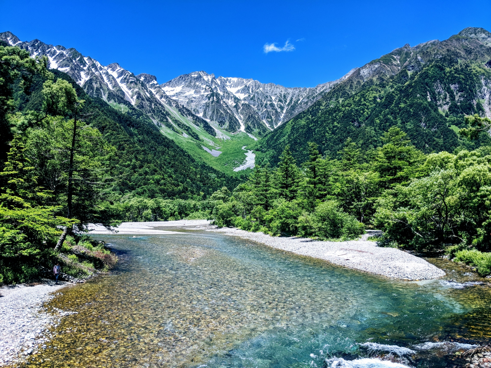
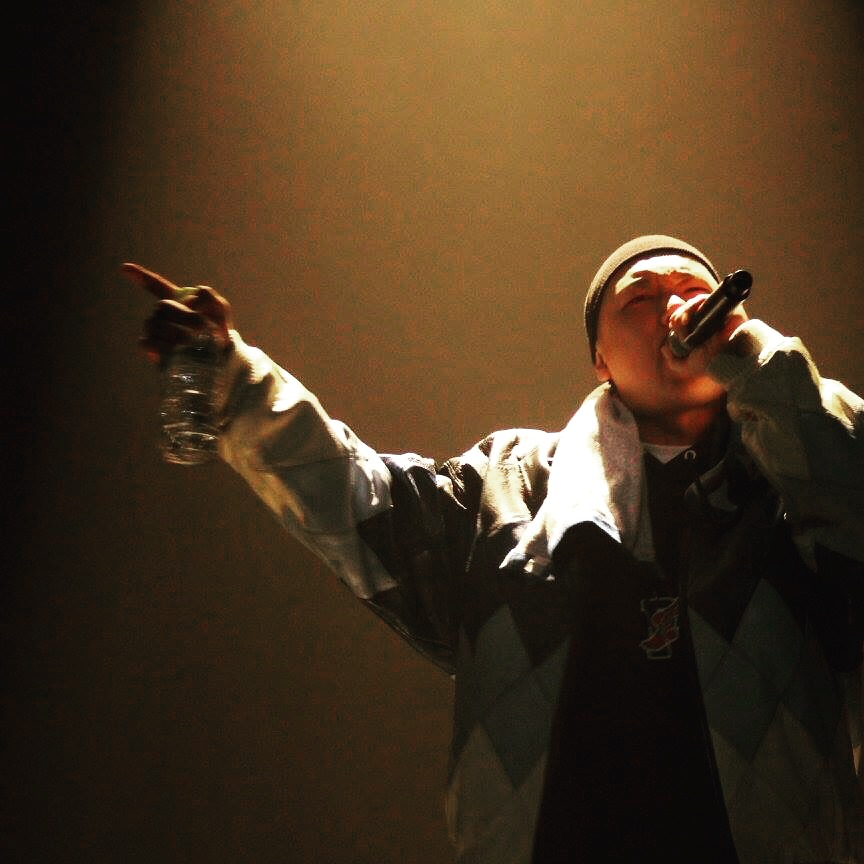
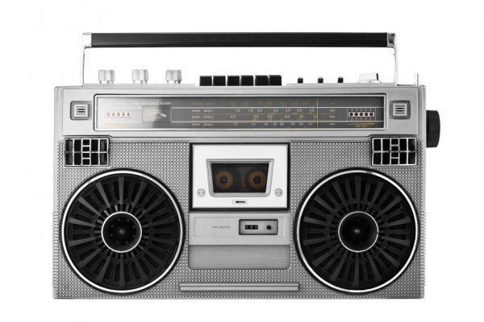
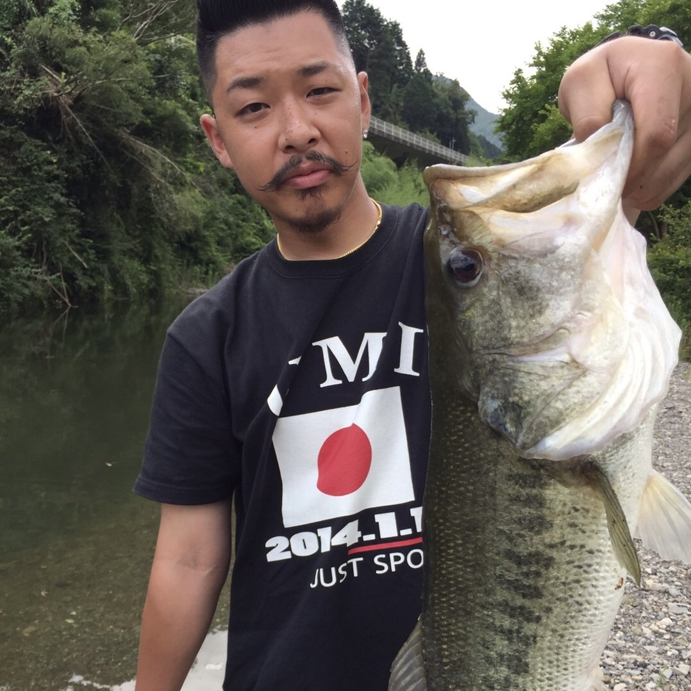
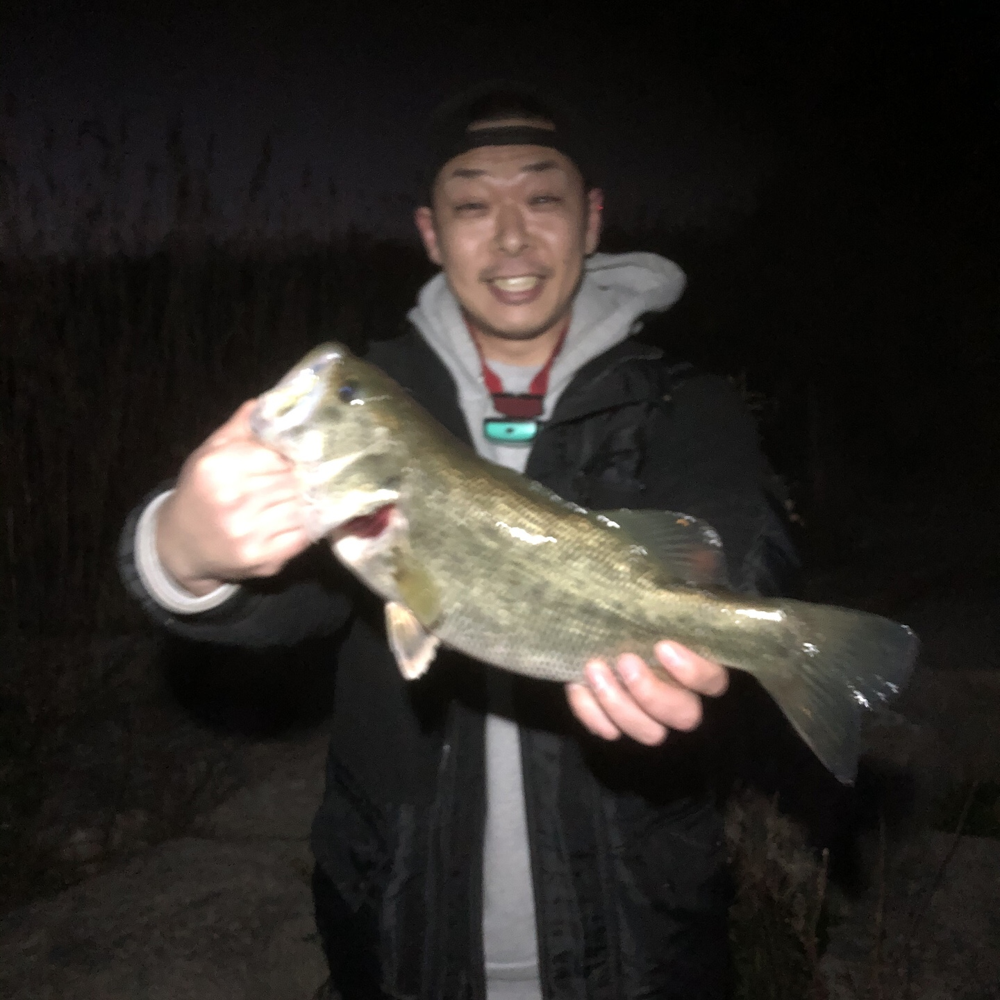
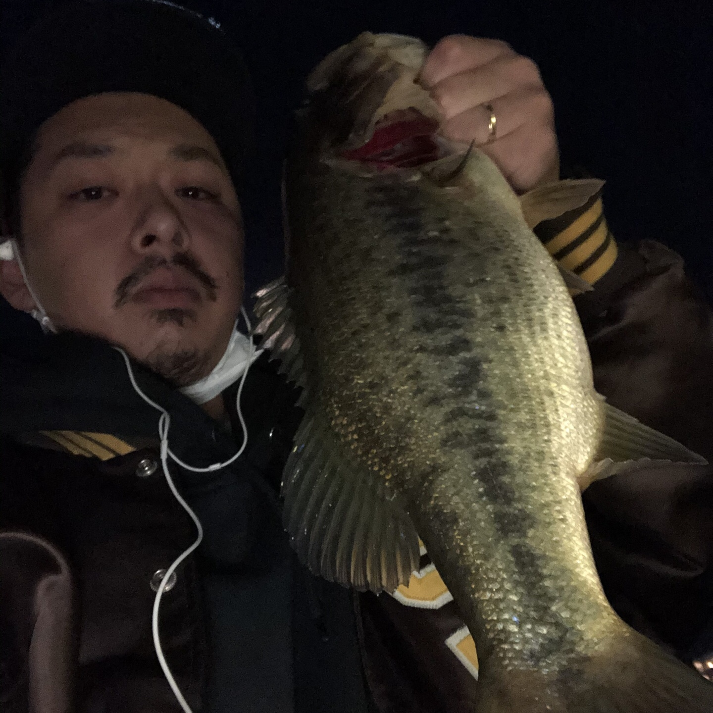
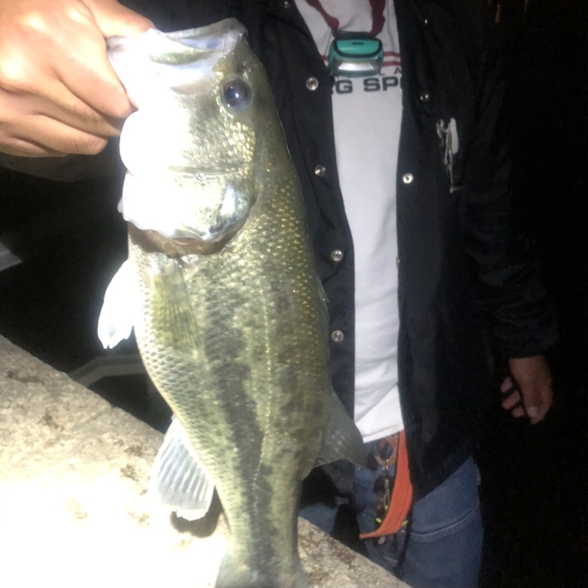
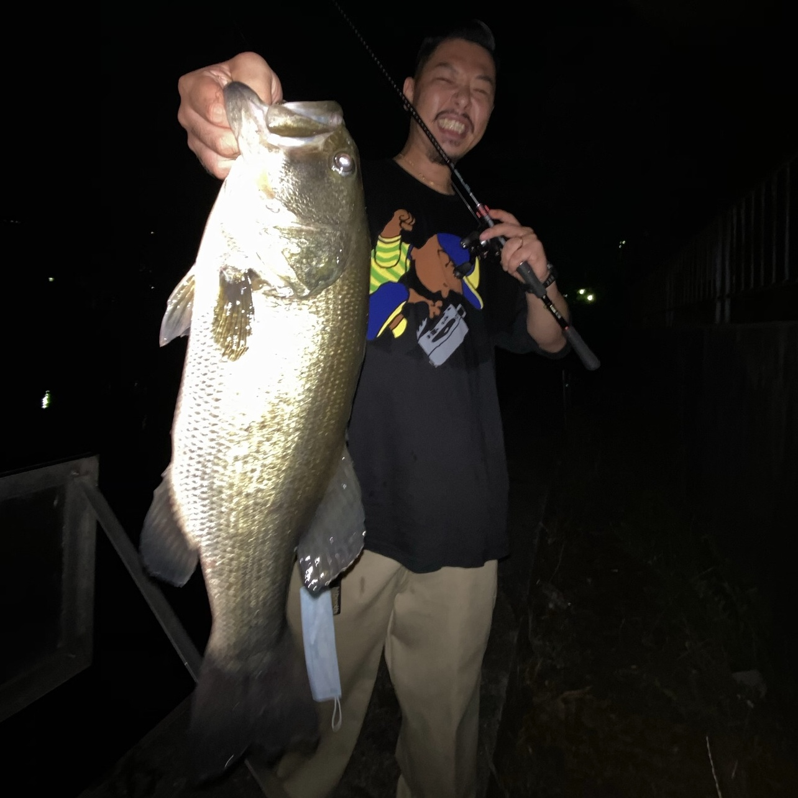
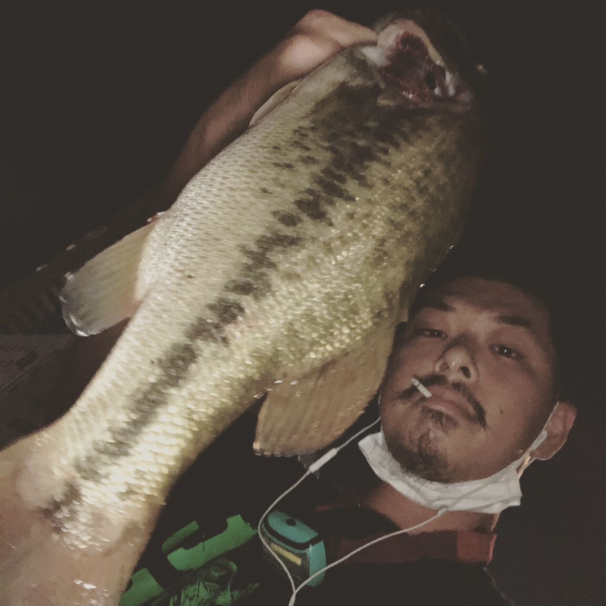

ABOUT
名前：海人
１９８８年、新潟生まれ。
１４歳の時にダンスに出会い、人生の半分をそこに費やす。たくさんの出会いに恵まれながら大きく成長。バックアップダンサーや、テーマパークダンサーとして活動。
RAPやDJ、ライブアートを通してファッションデザインなども経験し、舞台経験を生かした司会・個人でのラジオ番組等さまざまな分野で活動。
また、アニメやミリタリーなどのサブカルにも強い。
WORK
DANCE
- EXILE LIVE TOUR 2007/2008 バックアップダンサー
- 関西テーマパークダンサー
- 2017年リリース”HISATOMI/RISING SUN”MV出演
- その他イベント出演多数
MC（司会進行）
- RED BULL BC ONE JPN FINALライブビューイング解説
- RED BULL BC ONE 大阪予選司会
- CHEERSレギュラー出演
RADIO
ストリートカルチャーを経て、少しでもアウトプットするべく試みているのがRADIO。
短い歴史の中で深く刻まれたHIPHOPにおけるエピソードや人物などを紹介。
[●REC]ボタンクリックでPOD CASTへ。
FISHING
人生の2/3を費やしたバスフィッシング。
関西を中心に様々な場所に赴き、自然と一体になりながら魚と向き合う時間はまさに至高。
主な釣果として記録しています。
- 
- 
- 
- 
- 
- 